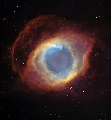

The Solar System is the gravitationally bound system of the Sun and the objects that orbit it. It formed 4.6 billion years ago from the gravitational collapse of a giant interstellar molecular cloud. The vast majority (99.86%) of the system's mass is in the Sun, with most of the remaining mass contained in the planet Jupiter. The planetary system around the Sun contains eight planets. The four inner system planets—Mercury, Venus, Earth and Mars—are terrestrial planets, being composed primarily of rock and metal. The four giant planets of the outer system are substantially larger and more massive than the terrestrials. The two largest, Jupiter and Saturn, are gas giants, being composed mainly of hydrogen and helium; the next two, Uranus and Neptune, are ice giants, being composed mostly of volatile substances with relatively high melting points compared with hydrogen and helium, such as water, ammonia, and methane. All eight planets have nearly circular orbits that lie near the plane of Earth's orbit, called the ecliptic.
There are many planetary systems like ours in the universe, with planets orbiting a host star. Our planetary system is called “the solar system” because we use the word “solar” to describe things related to our star, after the Latin word for Sun, "solis."
Our planetary system is located in an outer spiral arm of the Milky Way galaxy.
There are an unknown number of smaller dwarf planets and innumerable small Solar System bodies orbiting the Sun.[d] Six of the major planets, the six largest possible dwarf planets, and many of the smaller bodies are orbited by natural satellites, commonly called "moons" after Earth's Moon. Two natural satellites, Jupiter's moon Ganymede and Saturn's moon Titan, are larger than Mercury, the smallest terrestrial planet, though less massive, and Jupiter's moon Callisto is nearly as large. Each of the giant planets and some smaller bodies are encircled by planetary rings of ice, dust and moonlets. The asteroid belt, which lies between the orbits of Mars and Jupiter, contains objects composed of rock, metal and ice. Beyond Neptune's orbit lie the Kuiper belt and scattered disc, which are populations of objects composed mostly of ice and rock.
In the outer reaches of the Solar System lies a class of minor planets called detached objects. There is considerable debate as to how many such objects there will prove to be.[9] Some of these objects are large enough to have rounded under their own gravity and thus to be categorized as dwarf planets. Astronomers generally accept about nine objects as dwarf planets: the asteroid Ceres, the Kuiper-belt objects Pluto, Orcus, Haumea, Quaoar, and Makemake, and the scattered-disc objects Gonggong, Eris, and Sedna.[d] Various small-body populations, including comets, centaurs and interplanetary dust clouds, freely travel between the regions of the Solar System.
The solar wind, a stream of charged particles flowing outwards from the Sun, creates a bubble-like region of interplanetary medium in the interstellar medium known as the heliosphere. The heliopause is the point at which pressure from the solar wind is equal to the opposing pressure of the interstellar medium; it extends out to the edge of the scattered disc. The Oort cloud, which is thought to be the source for long-period comets, may also exist at a distance roughly a thousand times further than the heliosphere. The Solar System is located 26,000 light-years from the center of the Milky Way galaxy in the Orion Arm, which contains most of the visible stars in the night sky. The nearest stars are within the so-called Local Bubble, with the closest, Proxima Centauri, at 4.2441 light-years.
The Solar System formed 4.568 billion years ago from the gravitational collapse of a region within a large molecular cloud. This initial cloud was likely several light-years across and probably birthed several stars. As is typical of molecular clouds, this one consisted mostly of hydrogen, with some helium, and small amounts of heavier elements fused by previous generations of stars. As the region that would become the Solar System, known as the pre-solar nebula, collapsed, conservation of angular momentum caused it to rotate faster. The centre, where most of the mass collected, became increasingly hotter than the surrounding disc. As the contracting nebula rotated faster, it began to flatten into a protoplanetary disc with a diameter of roughly 200 AU (30 billion km; 19 billion mi) and a hot, dense protostar at the centre. The planets formed by accretion from this disc, in which dust and gas gravitationally attracted each other, coalescing to form ever larger bodies. Hundreds of protoplanets may have existed in the early Solar System, but they either merged or were destroyed or ejected, leaving the planets, dwarf planets, and leftover minor bodies.
Due to their higher boiling points, only metals and silicates could exist in solid form in the warm inner Solar System close to the Sun, and these would eventually form the rocky planets of Mercury, Venus, Earth, and Mars. Because metallic elements only comprised a very small fraction of the solar nebula, the terrestrial planets could not grow very large. The giant planets (Jupiter, Saturn, Uranus, and Neptune) formed further out, beyond the frost line, the point between the orbits of Mars and Jupiter where material is cool enough for volatile icy compounds to remain solid. The ices that formed these planets were more plentiful than the metals and silicates that formed the terrestrial inner planets, allowing them to grow massive enough to capture large atmospheres of hydrogen and helium, the lightest and most abundant elements. Leftover debris that never became planets congregated in regions such as the asteroid belt, Kuiper belt, and Oort cloud.[16] The Nice model is an explanation for the creation of these regions and how the outer planets could have formed in different positions and migrated to their current orbits through various gravitational interactions.[18]
Within 50 million years, the pressure and density of hydrogen in the centre of the protostar became great enough for it to begin thermonuclear fusion.[19] The temperature, reaction rate, pressure, and density increased until hydrostatic equilibrium was achieved: the thermal pressure counterbalancing the force of gravity. At this point, the Sun became a main-sequence star.[20] The main-sequence phase, from beginning to end, will last about 10 billion years for the Sun compared to around two billion years for all other phases of the Sun's pre-remnant life combined.[21] Solar wind from the Sun created the heliosphere and swept away the remaining gas and dust from the protoplanetary disc into interstellar space. As helium accumulates at its core the Sun is growing brighter;[22] early in its main-sequence life its brightness was 70% that of what it is today.
The Solar System will remain roughly as it is known today until the hydrogen in the core of the Sun has been entirely converted to helium, which will occur roughly 5 billion years from now. This will mark the end of the Sun's main-sequence life. At that time, the core of the Sun will contract with hydrogen fusion occurring along a shell surrounding the inert helium, and the energy output will be greater than at present. The outer layers of the Sun will expand to roughly 260 times its current diameter, and the Sun will become a red giant. Because of its increased surface area, the surface of the Sun will be cooler (2,600 K (2,330 °C; 4,220 °F) at its coolest) than it is on the main sequence.
The expanding Sun is expected to vaporize Mercury as well as Venus, and render Earth uninhabitable (possibly destroying it as well). Eventually, the core will be hot enough for helium fusion; the Sun will burn helium for a fraction of the time it burned hydrogen in the core. The Sun is not massive enough to commence the fusion of heavier elements, and nuclear reactions in the core will dwindle. Its outer layers will be ejected into space, leaving behind a dense white dwarf, half the original mass of the Sun but only the size of Earth.[24] The ejected outer layers will form what is known as a planetary nebula, returning some of the material that formed the Sun—but now enriched with heavier elements like carbon—to the interstellar medium.